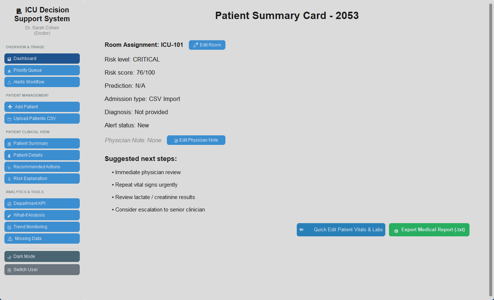
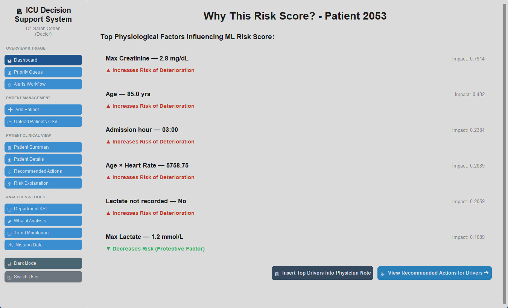

What it is
The model is served through a desktop dashboard (built with
customtkinter) that a clinician can use to review the
current patient list, open any patient for detail, and see a
plain-language explanation of the risk score. The app calls the
trained model directly — no web server involved — so it runs as a
single local process.
Architecture
The system is a single desktop process with no client-server split and no network hop between the UI and the model — the presentation layer calls straight into the backend as regular Python function calls.

Presentation Layer
CustomTkinter GUI. The clinician interacts with the dashboard; every screen is rendered by the same Python process that runs the model — there is no browser and no separate frontend service.
Internal Direct Python Imports
The GUI reaches the backend by importing backend/app.py as a module (sys.path.insert + from app import ...), not by calling a REST endpoint. Function calls, not network requests.
Application & Analytics Layer
In-process backend. Python Backend Functions orchestrate three steps in order: Feature Engineering & Input Validation (compute_features), Data Scaling (the fitted StandardScaler), and ML Risk Model Inference (LightGBM predict_proba).
Model Assets
model.joblib, scaler.joblib, and model_meta.json, loaded once from disk at startup and reused in memory for every prediction.
Local ICU Dataset (CSV Files)
COMPLETE_ICU_RISK_DATASET.csv is the offline training source consumed by export_model.py to produce the Model Assets — it is not read at inference time by the GUI.
Alert Management & Explanation Logic
generate_alerts() and get_risk_drivers() turn the raw risk score into clinical alert text and the per-patient SHAP-style "Why This Risk Score?" breakdown shown in the GUI.
Raw vitals are turned into the same 35 engineered features used in
training (compute_features), scaled with the fitted
StandardScaler, and scored by the LightGBM model. The
model's own SHAP-style attribution (pred_contrib=True)
produces the per-patient "Why This Risk Score?" explanation without
needing a separate explainability library at serve time. Full technical
detail is in the Model Integration Guide.
Dashboard
The landing view lists every patient with their computed risk score, color-coded risk level, and a one-click action to open the full record.

Patient summary
Opening a patient shows a summary card with the risk level, score, prediction, diagnosis, and a list of suggested next steps generated from the clinical alert rules.

Why this risk score?
This panel is the model's SHAP-based explanation for this specific patient — not a global importance chart. Each row shows the feature, the patient's own value, whether it raises or lowers risk, and the magnitude of its contribution.

Other dashboard views
The left-hand navigation also provides:
Priority Queue
Patients sorted by urgency so the highest-risk cases surface first.
Patient Details
Full vitals, admission context, and raw inputs for a patient.
Recommended Actions
Clinical next-step suggestions generated from the alert rules.
Alerts Workflow
Tracking alert status (New / Reviewed / Escalated) per patient.
What-if Analysis
Interactively adjust a vital sign and see the risk score recompute live.
Trend Monitoring
How a patient's computed risk changes over time.
Missing Data
Which optional labs are missing and how they were imputed for scoring.
⚠️ Research / educational prototype. Not a certified medical device and not validated for real clinical decision-making.